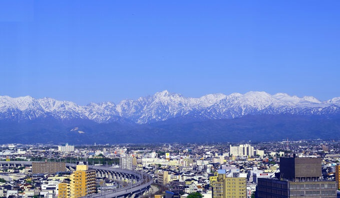
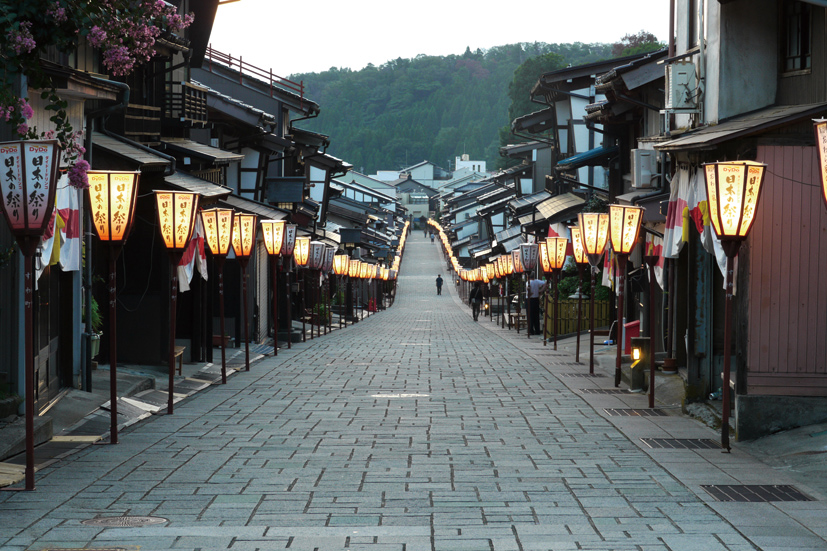
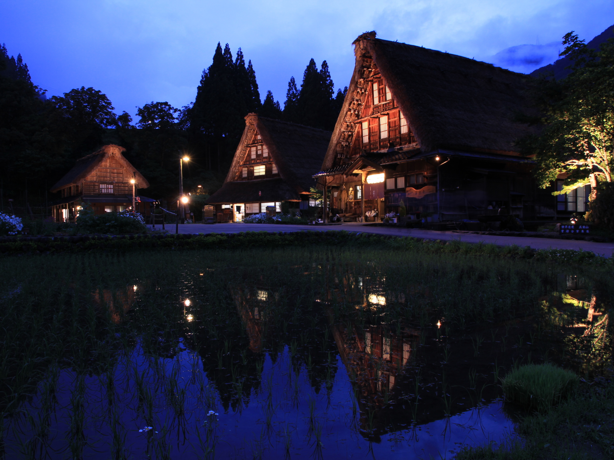
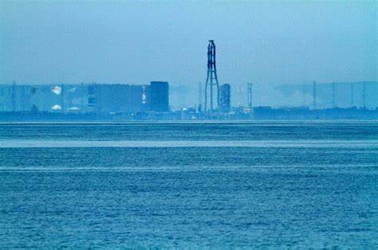

About
主にhtml、css、WordPressを使って、ホームページ、ブログを作成します。また、勉強中ですがプログラミングでアプリ制作する予定です。顧客のニーズにあった、魅力的なサイト制作を目指します。また、自然科学系の技術者でもあります。
住所:富山県 E-Mail:nao32175@gmail.com 資格：工学博士
Photos
私が住んでいる富山県の背後には立山連峰がそびえます。立山連峰は観光だけでなく台風から富山県を守ってくれています。
毎年９月１日から３日間、八尾のおわら祭りが開催されます。坂の町、八尾の街並みは風情があります。
南砺市五箇山では合掌集落が点在しています。若葉が萌える５月頃は集落と合致しています。
魚津市では春先に蜃気楼が発生します。運がよくないと見ることはできません。